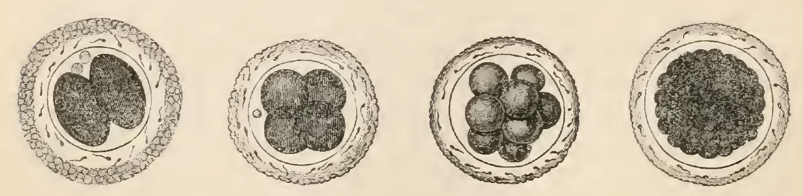
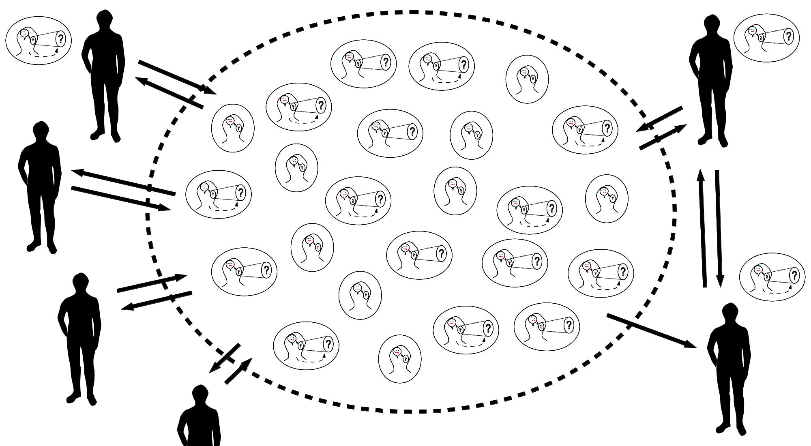
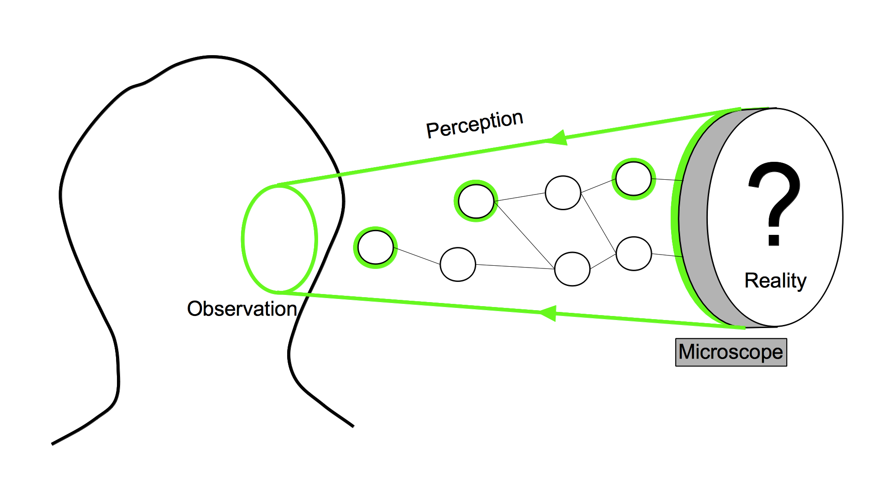
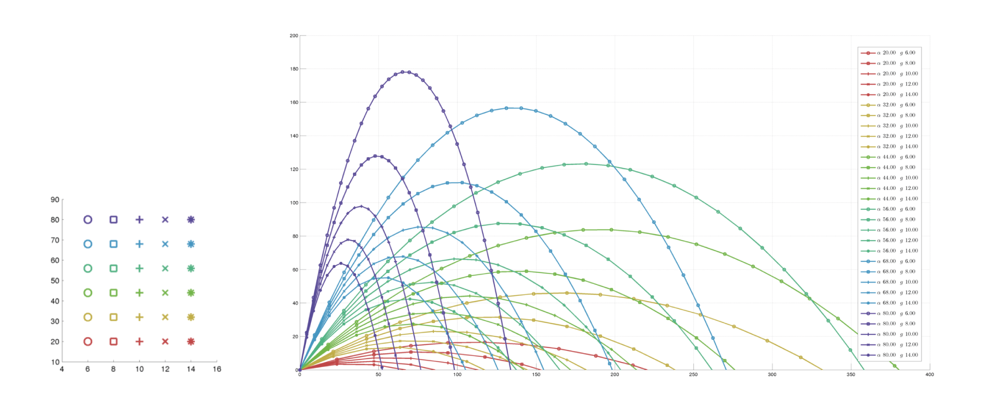
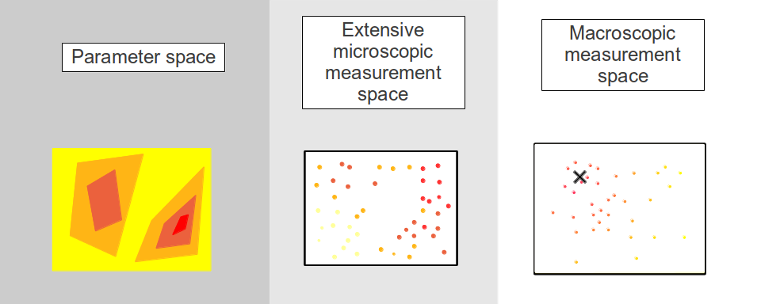

The spontaneous making of an entire multicellular organism from a single cell ranks among the most exquisitely complex phenomena in nature. Through a precise spatiotemporal interplay of genetic switches, chemical signals and mechanical constraints, an elaborate form is created without any of its myriad cells containing the explicit map of the resulting architecture. An eternal source of fascination for generations of philosophers, artists and scientists, biological morphogenesis is the epitome of what can be called today a self-organizing complex system. To follow the metaphor used by Enrico Coen in his beautiful popular science book The Art of Genes, it could be said that the embryo is similar to a canvas that paints itself (where colors represent cell differentiation) at the same time that it is growing and sculpting itself, too—both patterning and shaping affecting each other in a tight loop. Schematically, the mechanical properties of cells, such as their adhesion strength or intrinsic motility, are tightly correlated with their spatiotemporal location and molecular and genetic dynamics, which define distinct morphogenetic fields that further expand, reshape and segment themselves into subregions due precisely (in a feedback loop) to the self-assembly of differentiating cells.
In this introduction chapter, we first propose a brief chronological review of the field of developmental biology, born from the classical embryology (Section 1.1), then state the overall objectives of the project, which is called MECAGEN to highlight the double and coupled mechanical-genetic dynamics of development, to which this dissertation is contributing (Section 1.1.2). This will be followed by general preliminary remarks on the methodological principles and workflow that will be at the foundation of our work (Section 1.1.3), then an overview and summary of the remaining eight chapters of this dissertation (Section 1.1.4).
1.1. A Historical Timeline of Developmental Biology
1.1.1. The Science of How Organisms Form
A general definition would state that development is a dynamical process leading a given organism to a certain morphological state, and that the study of development is the study of the mechanisms ruling the coordination of cellular differentiation through space and time in a multicellular organism. This process is not steady, however, and organisms may alternate periods of intense transformation with quieter periods dedicated to growth only. However, the most dramatic events occur in the beginning, when the egg divides into a myriad cells. These soon start to perform a collective ballet of complex movements, which are precisely coordinated through a system of physicochemical interactions. It is interesting to note that this process never ends, the morphological state of an organism undergoing constant change, albeit smaller, until senescence and death.
The definition of development has its own embryogenesis: it has also changed and reformed itself through the numerous discoveries and practical methods that have punctuated the history of the field. The following major periods can be distinguished, adapted from Hopwood :
pre-1880: classical descriptive embryology (mostly addressed in Section 1.1.2)
1880-1930: classical experimental embryology (mostly addressed in 1.1.3)
1930-1960: reconciling genetics and embryology (mostly addressed in 1.1.4)
1960: modern developmental biology (mostly addressed in 1.1.5-6)
1.1.2. First Theories: Epigenesis, Preformation and Spontaneous Generation
Aristotle envisioned them all
If Hippocrates is often labeled as the first embryologist, based on his Hippocratic Collection where he describes the successive stages of incubation of hens' eggs , it is Aristotle in De Generatione Animalium who initiated the main theory of the formation of living organisms that still hold today. This theory, called epigenesis, states that organisms develop through changes in shape. New parts appear by themselves and deform through a series of stages. In Book II of his work, Aristotle foresees the alternative theory of preformation, which persisted well through the 18th century before it was gradually dismissed. It states that organisms develop from miniature versions of themselves, thus no new structures are truly generated during development, but parts simply unfold and grow:
Either all the parts, as heart, lung, liver, eye, and all the rest, come into being together or in succession, as is said in the verse ascribed to Orpheus, for there he says that an animal comes into being in the same way as the knitting of a net.
A third hypothesis was developed by Aristotle in Historia Animalium. Synthesizing contemporary thought, he introduces the theory of spontaneous generation. This theory proposes that some complex organisms such as flies can be generated from non-living matter such as putrefying earth, vegetable matter, or dead flesh.
Early mechanical interpretations
In 1651, William Harvey was among the first philosophers to consider embryonic development as a dynamic process requiring a causal explanation of a sequence of events . In 1664, René Descartes's De la formation du foetus was posthumously published and contained the first attempt to explain the formation of an animal embryo by means of mechanistic interactions. In this theory, the male and female seeds were thought to heat up and ferment until some of their particles started moving and forming the organs, from the heart that pushed the blood directly towards the place that it was freest to go, and participate in the formation of the brain .
The end of spontaneous generation
In 1668, Gregorio Redi realized an experiment which discredited the spontaneous generation hypotheses by showing that no fly can form in a closed jar containing food or dead flies. As maggots would appear, however, when the same experiment was run in an open jar, he concluded that the food or dead flies could not produce maggots by themselves . The final blow to this theory was struck by Louis Pasteur two centuries later (in 1859) when, as a young chemist, he showed that a boiled meat broth would not produce new organisms. The key idea of his experimental setup was to bend the neck of the container into a 'S' shape. It allowed air to pass through it but not the aerial microorganisms because of gravity. However, when the inflexion point was put in contact with the broth, a culture would rapidly start to grow.
The end of preformationism
Drawing of the homonculi observed in sperm by Nicolaas Hartsoecker (1695)
The contention between preformists and the upholders of epigenesis lasted longer. Antonie van Leeuwenhoek was a Dutch scientist who created various microscopes. In 1676, he made the first observation of single-celled organisms, animalcules, soon after Robert Hooke had first described and termed the cells. Leeuwenhoek discovered that the sperm cells of animals, among which humans, were entering the egg cell . In addition to his contribution to the refutation of spontaneous generation, this discovery favored the spermist side of the preformation camp. Some of them started to describe miniatured humanoid shapes as did Nicolaas Hartsoeker in 1695 .
Germ layers
In the 1820's, Christian Pander conducted a reinvestigation of developing chicks in egg and explained that development does not start from the formation of organs but originates from the transformation of primitive sheets of tissue, called the germ layers.
Cell theory
Between the 1820's and the 1850's, cells were added as the second pillar of embryological analysis mostly under the influence of Johannes Müller . In the late 1830's, the cell theory attempted to unify the development of the various observed eggs in vertebrates, and particularly in mammals. Cells progressively became the fundamental building blocks of every living species in the minds of the scientists. Robert Remak stated that every cell was produced by a preexisting cell, from the egg all the way to the tissues, via the germ layers . This insight is now called the segmentation or cleavage stage and is indeed the first morphological event of today's developmental studies. Remak also introduced the concept of germ-layer specificity in vertebrates, stating that each layer (endoderm, mesoderm, and ectoderm) is specifying the cell type or fate of all cells that originate from it (such as muscle, skin, nervous system, or intestine) . This concept was also central to embryology and preludes the fundamental questions that will continue occupying developmental biologists of the modern era.

Egg segmentation from a dog's oviduct, surrounded by the zona pellucida and spermatozoa as represented by Albert Kölliker in 1861 .
1.1.3. The Rise of Experimental Embryology
Starting in the 1880's, some embryologists reinvented their methods through experimentation to decipher the causal links between the successive stages of development. Calling this discipline Entwicklungsmechanik (developmental mechanics), Wilhem Roux and others applied to embryos various kinds of perturbations, whether mechanical, thermal, chemical or electrical .
Entwicklungsmechanik: self-differentiation vs. dependent differentiation
The key question raised by Roux was whether the differentiation process of the parts of an embryo was autonomous from external influence (autonomous differentiation or self-differentiation) or not (dependent differentiation). In 1888, he obtained half-embryos after destroying one of the cells of a two-cell frog embryo with a hot needle. The half-embryos were displaying either the anterior or the lateral halves. Roux concluded that each blastoderm was capable of self-differentiation, independently from the missing half . A year earlier, in 1887, Laurent Chabry had been the first to characterize the autonomous differentiation of cells' fate. By killing two identified blastomeres at the 8-cell stage of the ascidian tunicate, the animal became a tadpole that was missing its tail muscles. When he extracted and cultured the same two blastomeres at the same stage, they resulted in an isolated tail muscle .
In 1891, following Roux's influence, Hans Driesch repeated the experiment on a two-cell stage sea urchin embryo. He separated both blastomeres and observed that each one had differentiated into a half-sized, yet complete, sea urchin larva. In 1893, by pressing on a sea urchin embryo at the third cell cycle, Driesch completely modified the relative positions of the cells and still obtained normal larvae. A mosaic determination process would have produced a highly perturbed embryo, therefore it proved that the determination occurred later than expected via dependent differentiation. Driesch concluded: The relative position of a blastomere within the whole will probably in a general way determine what shall come from it.
These historical experiments epitomized the concurrent interpretations of autonomous vs. dependent differentiation, where the former requires determinants to be present at the earliest stage and separated by cell division to spatially specify cell fates, whereas the latter depends on the interaction between the cells (see a classification in ). Later, it was recognized that truth resided in the middle. Neither totally mosaic nor totally regulative, developmental principles are a fine balance between both principles . Some cells at certain stages seem highly dependent from their surroundings, and other times they seem to seal their hatches and follow their own differentiation path. From there on, most embryological studies will be dedicated to deciphering the modus operandi of these mixed principles, from their macroscopic characterization at the tissue level down to the molecular mechanisms at the sub-cellular level.
Morphogenetic fields
The early 20th embryologists refined these questions with new experiments such as grafts and aimed at deciphering what determined cell fates. In 1918, Ross Harrison published a paper that introduced the concepts of morphogenetic fields. He carried out various limb grafts on the newt embryo. He transplanted some cells from a specific region of the mesoderm to the non-neural ectoderm and observed that an additional forelimb was formed. The original grafted cell population had the ability, even after transplantation, to remember its fate. Even if the cells were separated into two subpopulations and grafted independently, both grafts would grow an intact limb . The key property of a morphogenetic field is thus to conserve its potential even after significant manipulation. Later observations showed that the fate of the morphogenetic field was dependent on the position along the antero-posterior axis. It led to the notion of gradient field which determined the identity of the morphogenetic fields .
Induction
In 1924, Hans Spemann and his student Hilde Mangold reported the discovery of a tissue in the newt gastrula that, when grafted on the ectodermal region of another newt embryo, triggered a neurulating process and initiated the formation of a secondary embryonic axis . This tissue was called an organizer, as it was apparently able to instruct and organize the adjacent ectoderm. Spemann proposed two different speculative mechanisms: either the existence of a chemical substance that would be transmitted to the induced tissue, or the inducing tissue would possess a specific vitalistic structure associated to the living embryo . These hypotheses became the focus of intensive study and debate.
Tissue boiling, desiccating and killing experiments practiced on the famous Spemann organizer rapidly dismissed the second hypothesis. A variant upon the theme of induction was introduced by Waddington in his work Organisers and Genes, in which an evocator-competence system defined an inducing substance, the evocator, that was only slightly perturbing the dynamics of the competent tissue, which would actively respond by a change of state controlled by the genes . The organizer was no longer believed to actively organize the formation of the induced organs but only release a water-diffusible chemical agent initiating the self-organization of the induced tissue. A global quest for the identity of the inducing substances started . In 1932, Johannes Holtfreter used dead or desintegrated organizer tissue that still induced neurulation , and multiple chemical substances were diffused into the competent tissue : lipids , oleic and nucleic acids , proteins . As it became evident that induction was occurring in multiple tissues , ubiquitous candidate substances were targeted. In 1961, Lauri Saxon showed that the inducing substance could act through a millipore filter with an average pore size of 0.8 micron and a thickness of 20 microns, confirming that the substance was indeed diffusive .
Decades later, the great variety of candidate substances that positively induced neurulation progressively discouraged the embryologists to pursue their quest for tissue-inducing agents, while the more promising field of modern molecular biology was attracting the younger generations away from this problem . However, it was only a temporary abandonment as the concept of induction witnessed a rebirth and was eventually reinstated on new physico-chemical grounds. The discovery of secreted proteins acting in evolutionary well-conserved signaling pathways, such as the mesoderm-inducing protein activin , launched again the quest for the inducer of the Spemann organizer.
1.1.4. Developmental Genetics
In the early 20th century, embryology and genetics were both part of the larger field of heredity and were tightly entangled. A distinction was initiated in 1926 by the work of Thomas Morgan who proposed that, to avoid confusion, embryology would study the expression of the hereditary traits, whereas genetics would deal only with the transmission of those traits (, Chapter II). From this time on, other biologists tried to reunite both fields, which led to the emerging field of developmental genetics.
The first publications at the foundation of this field were the work of Gluecksohn-Schoenheimer in the late 1930's, who interpreted the defect in the induction of the mouse notochord as the consequence of a mutation of the Brachyury gene , . The result would not only pioneer developmental genetics but also propose a new methodology for the study of embryology. Instead of perturbing experimentally the development of the embryo and observe the consequences on its phenotype, mutant phenotypes were to be observed first and genetic causes had to be inferred from them.
This methodological dichotomy was later merged with the experimental generation of mutants selected by the observation of their phenotypes. This was especially the case of chemically induced random mutations in Drosophila by Nüsslein-Volhard and Wieschaus in the 1980's , which eventually earned them the Nobel prize, or more recently in zebrafish .
Waddington was also an important defender of the importance of genes in development. According to him, genes act as controllers of cellular fate. By comparing the development of mutated Drosophila, he observed that a presumptive tissue (the imaginal disc) would transform into a leg or an antenna according to the mutation . He illustrated his view by the concepts of epigenetic landscape and canalization, which he compared to grooves and bumps guiding a rolling ball of cell fate on a hilly terrain. Behind the scene, i.e. under the hill, genetic interactions reshape the folds, hence orchestrate embryonic development (Fig. ).
Waddington's epigenetic landscape. A: The ball represents a cell evolving in the epigenetic landscape. Its fate is determined by the canals in which the ball is rolling. B: A view of the landscape's behind the scene. The landscape relief is dynamically controlled by hidden wires that symbolize genes' expression and interactions. Image and caption adapted from Slack .
1.1.5. Molecular Genetics
Operon-lactose
The discovery of the operon-lactose mechanism by Jacob and Monod in 1961 set the start of the genetic trend in embryology. It applied the idea of induction at the subcellular level by introducing genetic determinants, the regulator and operator genes, which explain how the rate of protein synthesis was controlled by the action of repressors. This seminal paper already envisioned the influence of this discovery on embryology:
The occurrence of inductive and repressive effects in tissues of higher organisms has been observed in many instances. . . It has repeatedly been pointed out that enzymatic adaptation, as studied in micro-organisms, offers a valuable model for the interpretation of biochemical co-ordination within tissues and between organs in higher organisms. The demonstration that adaptive effects in micro-organisms are primarily negative (repressive), that they are controlled by functionally specialized genes and operate at the genetic level, would seem greatly to widen the possibilities of interpretation. The fundamental problem of chemical physiology and embryology is to understand why tissue cells do not all express, all the time, all the potentialities inherent in their genome.
Immediately understood by some embryologists as Waddington, who had defended the notion of a cytoplasm-activated genetic control of cell fate in development (Chapter The Activation of Genes by the Cytoplasm in Principles of Embryology, 1956 ), this discovery opened the door to the reconciliation between the embryological orchestration of spatiotemporal cell specification and the biophysical molecular paradigm.
Gene regulatory networks (GRNs), cis-regulatory systems
The modern view of the orchestration of cell behavior in space and time is conceptualized by the work of Eric Davidson on the cis-regulatory system. It is an extension of the work of Jacob and Monod that systematizes the role of the genetic regulators as arrays of transcription factors' target sites on the DNA . These arrays, called the cis-regulatory elements as they are usually on the same DNA molecule as the genes that they regulate , define a network of interactions between the genes involved in development, called the gene regulatory network (GRN). The dynamics of this network is regulated by its topology and the quantities of the various transcription factors (TFs) that bind the cis-regulatory elements. As E. Davidson mentioned, the first GRNs were anecdotal but since 2002 rapid progress in their systematic analysis led to the publication of large-scale GRN maps, such as the network specifying the endomesoderm of the sea urchin embryo (containing over 40 genes), or the network responsible for the dorsoanterior-ventroposterior patterning and the endoderm formation of the zebrafish embryo .
Maternal factors
The dynamics of the GRN regulation is initialized by the various maternal factors. The transcription factors are already present in the egg and serve as inputs to the GRN. The first direct evidence of a maternal RNA present in the oocyte and controlling the early activation of the GRN in the mouse was published in 1994 . Maternal factor anisotropy is also an important cause of the patterning of the body plan. As the maternal factors are not homogeneously spatialized in the egg, a differential initialization of the GRN occurs in the different blastomeres. The bicoid gradient establishes the antero-posterior axis in the Drosophila embryo and is responsible for several asymmetries . In the C. elegans nematode development, the Skn1 maternal factor is concentrated on the posterior axis and specifies the antero-posterior axis . In the zebrafish, a maternal transcript, Squint, has been proposed as a predictor of the dorsal axis .
Signaling pathways, transduction
While the GRN dynamics view is centered on the cell, it also takes into account its communication capabilities through exchange of molecular information. Cell-cell interactions are realized by binding of secreted extracellular ligands, which trigger a transduction process and subsequent modification of the cytoplasmic dynamics. As mentioned by Pires da Silva and Sommer, a wide variety of cells use only a few classes of signaling pathways. For example, among these pathways, the Wnt gene has been discovered multiple times in different animals. Its name itself is the contraction of two occurrences: the Int1 gene characterized in 1982 by Nusse and Varmus that induced mammary gland tumors in mice ), and its homologue the Wingless gene (Wg) associated with Drosophila mutants that lacked wings . The Wg mutation was later associated with defaults in the Drosophila segmentation process ). Other major signaling pathways are Notch, Hedgehog, TGF\(\beta\)-BMP, and FGF .
Mechanotransduction
Another important factor of cell dynamics is the integration of mechanical forces by the cell, or mechanotransduction. Mechanical forces had been thought to play a major role in tissue and organ shaping since the end of the 19\(^\textrm{th}\) century, from Wolff who studied the impact of the mechanical environment on the structure of bone tissue after fracture healing to Roux and D'Arcy Thompson . More recently, forces have been demonstrated to influence vascular endothelial function . The applied tension has been correlated with the proliferation rate in endothelial cells and with the morphology of branching processes .
Evidence of mechanotransduction in modulated morphogenetic processes includes the role of forces on the cytoskeletal dynamics in the Drosophila mesoderm invagination and the orientation of polarization axes in collective migration behavior . An increasing number of studies stress the importance of mechanotransduction as an input of the GRN. The possible regulation of gene expression by microtubule-induced nuclear enveloppe fluctuations was shown in Drosophila . A definitive demonstration of mechanotransduction's direct input into the GRN was given by Desprat et al. , who showed that compression forces exerted by a tissue could induce the expression of a transcription factor in another tissue. The corresponding TF, Twist, is involved in the differentiation of the anterior midgut in Drosophila. After removing the pushing cells by laser ablation, they were able to rescue Twist expression by experimentally applying forces with magnetic microtweezers.
Gene regulatory networks and epigenetics
In addition to mechanotransduction, a growing number of epigenetic features provide new types of inputs to the GRNs, introducing novel possibilities to control genetic expression during development. After the now classical DNA and histone methylation shown in different model organisms including the zebrafish , gene silencing by RNA interference is also described as a major concept part of the gene regulation machinery, also leading to a new kind of bioengineering tools .
1.1.6. Cell Biomechanics
The post-genomic era is bringing back the cell as the integrator of the molecular and genetic machinery. In this context, understanding precisely what the cell is doing is a major issue. Cell motility, cell adhesion, cell membrane deformation are all part of the biomechanics underlying morphogenetic processes and their emergent features at a macroscopic level. As reviewed by Ray Keller , this field remained quiet for a long period during the 20th century but was recently revived. Keller distinguishes between two tendencies that structure the physical shaping of embryos and were both envisioned by Johannes Holtfreter: the notion of selective affinity modulated by adhesion, and the notion of physical integration of multiple local cellular behaviors.
Differential adhesion hypothesis and improvements
Holtfreter employed his experimental skills to separate cells from their different germ layers and mix them. He observed that they were still able to recognize their lineage origins and adopt different preferential association or affinities accordingly . He postulated that this mechanism could lead to the progressive organization of the embryo. In the 1960's, Malcom Steinberg refined this idea and developed the Differential Adhesion Hypothesis (DAH) . Comparing the behavior of cells during development to the properties of liquids, the DAH states that in a heterogeneous population cells are both cohesive and mutually motile, the interfacial surface tension leading the ensemble toward the most stable configuration. The main factors defining the interfacial surface tension were originally the mutual adhesiveness between cells, where higher affinity meant stronger bonds. This theory became very popular because of the simple causal link that it offered between gene expression and physical shaping through adhesion molecules. Later refinements added cell rigidity as a key factor to the interfacial surface tension definition. Through cortical tension, the driving principle became that stronger adhesion was increasing the contact size whereas stronger cortical tension decreased it .
Diversified cell behaviors
The second notion envisioned by Holtfreter was that cell mechanical behavior was truly diversified and that a global integration of the local behaviors had to be brought to light. He observed the specialization of the external layer of frog gastrulae, in particular its organization as a planar sheet in which specific cell shape changes must reflect specific cell mechanical behaviors. The so-called epithelial cells are characterized by a strong polarization between the interior side, or basal side, and the exterior side, or apical side. They exhibit strong cohesion at their lateral interface and form surface layers . During embryonic development, epithelial behaviors may be temporary as epithelial cell may leave the surface layer and migrate toward different regions. These cells are called mesenchymal and the transformation is the epithelial-mesenchymal-transition. Holtfreter also observed the protrusive activities of these cells in culture, and the way they exerted forces on the substrate and oriented their migration. Trinkaus determined the migrating behavior of cells in the avian neural crest, echinoderm mesenchyme and teleost fish epiboly . The collective behavior of mesenchymal cells was reviewed in . These concepts are the basis for more recent quantitative approaches of cell biomechanics in culture and in vivo .
1.2. Integrating Developmental Mechanics and Genetics: The MECAGEN Project
The ambition of the MECAGEN project, to which this dissertation contributes, is to construct an encompassing model of the multiscale dynamics of the early stages of animal morphogenesis. This theoretical endeavor must be controlled experimentally by a cohort of original quantitative reconstructions of the developmental processes, essentially taking the form of an image processing workflow on the one hand (see Chapter 7 of this thesis), and agent-based model and simulation on the other hand (Chapter 3-5). In this approach, embryonic development is construed as a self-organized phenomenon arising from a multitude of individual cell behaviors, including their genetically and chemically regulated, and regulating, biomechanics. It is a fundamental research project that relies on an important software programming effort required to (a) extract relevant measurements from real data (obtained by microscope imaging, Chapter 7), (b) recreate virtual data (by simulation, Chapters 3-5), and (c) validate the simulation against the measurements (Chapter 8).
The embryo as a complex system
Typical systemic properties of living organisms, such as homeostasis and autopoiesis, can only be understood through a complex systems approach of their underlying biological processes. Complex systems refer to objects composed of a great number and diversity of small elements (e.g. organisms made of cells, cells made of molecules), which interact locally in a decentralized and self-organized way to give rise to a rich repertoire of non-trivial collective behaviors. This phenomenon is also called emergence, referring to the fact that the higher-scale properties qualitatively differ from the lower-scale elementary features, and cannot be deduced from them (if only because of a combinatorial explosion). The complex systems viewpoint requires new methodological and experimental strategies, in the case of development the use of animal models chosen for their properties of accessibility, transparency and phylogenetic position.
MECAGEN wants to confront directly the level of the complexity of living processes, something that biology has so far partly evaded in its traditional attempts to address the function of genes one by one, or dissect subcellular processes in isolated cultured cells. This historical avoidance of complexity was undoubtedly necessary at first, and the reductionist approach has provided critical descriptions of the components, their local interactions, and their context. But now that the pieces of the puzzle have been (more or less) well identified, it is ample time to try and integrate them all together at the level of thousands of genes and millions of cells in order to see the big picture of the growing organisms. Moreover, the decomposition approach has limits that can be overcome only by viewing the elements in the broader context of their interactions.
Supporting platforms and methodologies
Our approach to developmental complexity consists of a reconstruction of multiscale dynamics from measures based on in vivo observations at appropriate spatial and temporal scales. The MECAGEN project branched out of the integrative biology platforms (formerly European projects) Embryomics and BioEmergences, which have pioneered the design of methods and algorithms for measuring and reconstructing the dynamics of multicellular development observed by microscopy. The concept is that biologists produce and annotate time-lapse series of organism development, while mathematicians and computer scientists process these images to reconstruct (BioEmergences) and model (MECAGEN) collective cell dynamics. This effort resulted in sophisticated software platforms capable of handling large amounts of 4D imaging data through a workflow of segmentation and tracking algorithms. The concept of multiscale dynamics reconstruction does not come from biology, but from disciplinary fields that use formalization. Moving in this direction can be done only within an interdisciplinary context, where there is agreement about a representation of the system, the acquisition of relevant data and the processing of such data to extract quantitative measures. Then comes the question of theoretical models and what is expected from them. The relevance of such models depends on their predictive power, and this power is measurable only by going back to the experiments (see Section 1.3).
Summary of objectives and particular position of this dissertation
In this context, the objectives of MECAGEN are to implement:
(A) the quantitative multiscale reconstruction of the morphodynamics of the zebrafish Danio rerio's early embryogenesis, from the egg to the beginning of somitogenesis (15 hours of post-fertilization development at 28 degrees Celsius), supplementing the qualitative descriptions of biological processes with observations in 4D (3D+time) and measured data that allow the statistical analysis of individual and collective cellular behavior.
(B) the modeling of the gene regulation processes, cellular dynamics and biomechanical constraints that govern morphogenesis via coupling between a discrete and a continuous formalization. Model and experiments are joined in a feedback loop, in which the model is optimised and falsified by experimental trials of gain and loss of function.
By its interdisciplinary nature at the interface between theoretical and experimental biology, including the modeling of molecular and cellular dynamics and their multiscale integration, MECAGEN relies on various methodological tools, mainly in computer science and algorithmic tools (image processing, multi-agent systems), mathematics (image processing, dynamic systems, statistics) and the modeling of large amounts of data (parametric estimation, optimisation).
The present dissertation will be focusing for the most part on the biomechanical side (MECA, Chapter 3) of the project as not only was it a huge endeavor in itself, but it was also a prerequisite to the understanding of gene regulation and chemical signaling (GEN, Chapter 4, only covering the basics) and the coupling of both sides (Chapter 5, only sketched out). Genes play a role only inasmuch as there is a physico-chemical phenomenon to steer and control. As James D. Murray puts it :
However one chooses to ignore mechanics, nevertheless, presiding over every embryonic twitch and jerk are Newton’s laws. And whatever role chemistry and genetics play in embryogenesis, they must finally submit their programs for Newtonian execution. Therefore, we have adopted the philosophy that, since morphogenesis is—at least proximally—a mechanical event, it is reasonable to start analyses of morphogenetic processes by examining the forces that produced them, and then, working backwards, add chemistry and genetics as needed (p314).
1.3. Methodological Considerations
In this section, and before we set out on describing the model and experiments in the next chapters, we first wish to lay out our tools on the bench, i.e. the methodological principles and workflow that are at the foundation of our project. In short, we defend the notion that the complex nature of the processes involved in a phenomenon such as vertebrate development requires the use of augmented tools and strategies, built upon the classical experimental scientific framework. While this is not a dissertation on the philosophy of science, we felt it was nonetheless crucial to clarify the framework of our modeling and simulation endeavors, which constitute an attempt at tightly integrating experimental observations with theoretical models in order to unravel the physical mechanisms of embryogenesis . To this aim, we will make short but, we hope, important preliminary remarks about the generation of hypotheses and models by scientists and the tools that they design to help them in this process, then discuss the notion of validation and quality of a model.
Accordingly, this section is organized as follows: we first comment on the position of a scientist-modeler with respect to the external reality, i.e. her/his object of interest, but also the rest of the scientific community; then we examine the tools that can be used to augment the three fundamental scientific steps of perceiving, conceiving, and manipulating, which together form a loop; finally, we ask what it means for hypotheses to be ultimately validated by a fitness function, which is essentially a measure of the discrepancies between the simulated and the raw data.
1.3.1. The Scientist in the Observation-Hypothesis-Experiment Loop
The Individual
Experimental science stages an individual and her/his environment, or reality. Like any other explanation-seeking activity, experimental science is characterized by three fundamental processes in a cycle: perception of the environment, generation of new hypotheses, and experimentation on the environment to test these hypotheses (Fig. ).
The observation-hypothesis-experiment loop of experimental science. It involves two main actors: the individual and reality (environment); and three main processes: perception, hypothesis generation (modeling), and experimentation.
The loop can be entered by the individual perceiving and observing her/his environment.
The observations made by this individual are then matched with the knowledge that s/he holds. Most of the time, observations conform to this knowledge and no particular reaction is elicited. Otherwise, a significant difference between the observations and what was initially expected by the observer triggers a curiosity signal that challenges her/his existing set of hypotheses and leads her/him to reconsider some of them. The cognitive processes by which s/he creates new hypotheses (e.g. analogy, inference, induction, abduction, or deduction) are not discussed here. Ultimately, satisfying hypotheses are the ones that can establish causal relationships among the observations. They can identify certain observations (the effects) as the consequences of others (the causes). Hypotheses also have a predictive value as they allow to extrapolate the behavior of the system when the causal factors are modified.
The experimental qualifier attributed to many domains of biology or physics comes from combining the pure thought exercise of generating new hypotheses and real interactions with external objects in order to test the validity of these new hypotheses. The most efficient way for an observer-modeler to assess that the causal relationships that s/he inferred are compatible with her/his observations is to identify some elements of the studied object as potential factors, then perturb these elements to modify the behavior of the studied object, and finally compare the new observed behavior with the predicted behavior. Note that the environment of the individual is made of multiple potential objects of study, so that the specification of one object of interest implies its separation from the environment, which may or may not include her/him. In developmental biology, the studied object is the embryo and the observer is excluded from the embryo's natural environment.
Exchange/Validation by the Scientific Community
Even if the individual is at the center of experimental science, it is above all a collective knowledge-building enterprise. The interaction between an observer-modeler and the rest of the scientific community operates bidirectionally (Fig. ):

The collective effort of experimental science. Each member of the scientific community may send or receive scientific work, which are verbal or written descriptions of parts or the whole observation-hypothesis-experiment loop.
All the hypotheses made by an individual are elaborated upon a historical accumulation of prior scientific works. Today, s/he is potentially able to access all of the knowledge produced by the scientific community thanks to Internet, in particular the various article databases (Pubmed, arXiv.org, IEEE, ACM, Google Scholar, etc.).
One particularity of science is that the validation of a scientific work is ultimately decided by approval of the community. Through the peer-reviewed publication system, each new proposal is screened before being made available by a panel of individuals representing the community. This social dynamics is not without its problems, naturally (issues of motivation, expertise, time, politics, etc.), but consensus is basically the only mechanism that we have. We can distinguish between two types of peer validation: the validation of the scientific work containing all or some parts of the elements illustrated in Fig. , and the validation of the hypotheses contained in the scientific work itself. We will develop the latter aspect in Section 1.3.3.
1.3.2. Designing Tools to Perceive, Conceive and Manipulate
Experimental science insists on confronting hypotheses, the prediction they generate and observations. This confrontation is improved or augmented by the means of tools. Tools can be considered the third actor in experimental science, in addition to the individual and the object of study. In fact, they are objects of study in themselves. In developmental biology, the technologies used to observe (microscopy) or perturb (genetics, chemistry, mechanics) a growing organism are the focus of intensive research in other fields of science. The advances of our understanding are closely coupled to the advances of these specialized and cutting-edge instruments. Microscopy imaging is constantly improving and expanding the spatiotemporal resolution and scope of observations. Every new microscope triggers a boom of new methodologies, observations and conceptualizations. For example, Fig. illustrates the perception pathway augmented with such tools. We examine below three types of tools designed to augment the three fundamental processes of experimental science: tools to perceive, tools to conceive, and tools to manipulate.
Tools to Perceive
Tools can greatly improve the perception of the studied object, whether upstream at the level of the interface between the real system and the observed (raw) data, or downstream at the level of the reconstruction and analysis of this data to extract salient features compatible with its interpretation. Perception-augmenting tools allow to reach information inaccessible to the natural senses of the individual: they widen the scope of perception and increase its resolution at the same time.
Perception-augmenting tools, however, can also perturb the natural behavior of the studied object by introducing external elements. For example, in the present study, microscope images are obtained by using artificially mutated specimens of fish or injecting fluorescent molecules, which are also heated by the laser light that is designed to illuminate them. Therefore, special care must be taken to evaluate, control, and maintain the possibly deleterious perturbation to a minimum.
The goal of perception-augmenting tools is to produce measures of the studied object. Measures are a quantification of the physical attributes of the object by ordinary real numbers, the data, which are scaled in units. Therefore the data is the embodiment of the abstract notion of measure. Measures and data are never interpretation-free, as they are collected by choices that depend on prior knowledge. Thus their quantitative nature does not preclude subjectivity. They are indispensable resources that must be handled carefully and their scaling units validated by consensual agreement.

Augmented perception with interfacing tool (optical microscope) and a reconstruction workflow.
Optical Microscopy: An Interface with the Studied Object
In developmental biology, the principal perception-augmenting tools are obviously optical microscopes. The sets of measures used in the present project are originating from these devices. Other tools used in developmental biology, but more disruptive ones, are force microscopes and molecular biology techniques such as DNA/RNA microarrays, and macromolecule blotting and probing.
Optical microscopes extend our natural perception to the cellular scale and below. The general principle is to send photons to excite small regions of the embryos, which in turn emit other photons that are collected by camera sensors through objective lenses. The path of the exciting light beam can be controlled to cross the region of interest in the embryo. A software automates the task and automatically associates the spatial coordinates of the excited region to the quantity of photons captured by the sensors. An extensive scan produces a certain volume of voxels (3D pixels) that store the spatially localized quantity of photons emitted by the embryo. This process is repeated multiple times and a time-series of 3D volumes is generated, eventually producing 4D (or 3D+t) raw data.
The value stored in a single voxel is called its intensity and belongs to a first category of raw data that we call here local microscopic measures, which are characterized by the smallest resolution both spatially and temporally. Then, the aggregation of all these local measures produces extensive local measures, a second category of raw data that can otherwise be called a field and contains the complete set of information captured by our perception-oriented device. Raw data presents two challenges:
Its size is generally enormous. A few hours of embryonic development under the microscope typically produces billions of integer values. For example, 200 3D volumes of voxels of intensity sampled every 3 minutes, each volume having a resolution of \(512 \times 512 \times 200\), yields over \(10^{10}\) values. This size may can also be multiplied by the number of channels used for light excitation. In the present study, two different channels are used for nucleus and cell membrane labeling. Multiple channels can be used to capture the light emitted by fluorophores that label gene expression .
Consequently, profuse raw data is abstruse: it cannot be interpreted easily and no biological insight can be gained from direct observation.
Phenomenological Reconstruction
Computers offer visualization software tools that allow the observer-modeler to create 3D+t movies of the captured developmental sequences. While a raw movie can certainly lead to qualitative insights, it also critically lacks quantitative measurements. Thus data processing is a necessary step toward a comparison with the predictions derived from the hypotheses, and a final interpretation. Here, we call this step the phenomenological reconstruction, or simply reconstruction, of the data. The idea is that, since raw data contains more or less incomplete information on the structure of the imaged embryos, depending on the spatiotemporal resolution and signal-to-noise ratio of the microscope, missing pieces have to be quite literally reconstructed. Moreover, as the reconstruction is realized from prior knowledge about the studied object, which is subjective with respect to the individual, this reconstruction is also phenomenological.
The reconstruction process is composed of a series of subprocesses organized in a workflow. Each subprocess carries out a specific task that extracts some information from the input data sets, completes it, and generates new data sets (Fig. ). The question is then to define what type of measure the phenomenological reconstruction is aimed at. As described in Section 1.1, the individual cell's dynamics is the fundamental unit of comprehension of biological development. The objective is thus to reconstruct the collective spatiotemporal dynamics of all cells taken together. The format we propose to use here is organized around the lineage tree, which follows along a global time line the complete cell genealogy starting from the zygote (Fig. ). Each item of this graph represents a cell at a given time step. As we progress along the time axis, each item is connected downstream (a) either to a single item representing the same cell at the next time step, (b) or to two items if the cell has divided, where each item represents the daughter cells. The lineage tree is then enhanced or decorated by labeling each item with local observations about the cell it represents, describing its dynamics: its spatial 3D coordinates, membrane shape, list of neighbor cells, and various scalar quantities representing the fluorescent labeling molecules (RNA, proteins, etc.). In future work, we plan to add more precise information about asymmetrical quantities of labeled molecules, which represent cell polarity.
The three major steps of the reconstruction in the BioEmergences platform: raw data, reconstructed embryo and macroscopic measures. Left: raw data of the zebrafish developing head (nuclei labeled in green and cell membrane in red). Center: visualization of the reconstructed embryo with the MoveIt software. Small dots are the cell centers and arrows gives the future cell displacement. Colors indicates the velocities of the cell. The central image illustrates the extremely high dimensionality of the reconstructed embryo. Right: Macroscopic measures of the displacement field in the developing embryo (from B. Lombardot PhD manuscript ). Images realized by the BioEmergences team.
Equipped with this enhanced lineage tree, which we call the reconstructed embryo, the cell dynamics can be followed through space and time. The structured format of this exhaustive set of measurements allows comparison with predictions from the hypotheses, and among different reconstructed specimens. The reconstructed embryo is an extensive local measure, following the term we defined earlier. While it greatly facilitates and accelerates the handling of observations, the problem is that its dimensionality is also huge—as it scales with the number of time steps multiplied by the number of cells per time step multiplied by the number of local measures per cell. Thus it represents only the foundation of a higher-level reconstruction of the embryo dynamics, which ultimately provides the individual with interpretable biological facts. This higher level reconstruction represents a third category of data, which we call macroscopic measures. The macroscopic measures are obtained by projecting the enhanced lineage tree space onto specific low dimensional space characterizing biological properties. Performing multiple macroscopic measures allows a relevant characterization of the behavior of the global dynamics of the developing embryo.
Some of the reconstruction modules can be realized with off-the-shelf commercial software. However, the high number of cells involved and the difficulty to interpret and manipulate the 3D volume of data initiated in our group the design and implementation of better suited custom software and greater automation of the workflow of these subprocesses. Nadine Peyriéras at the NED (formerly DEPSN) in Gif-sur-Yvette and Paul Bourgine at the CREA lab and ISC-PIF institute in Paris, spearheaded two major European projects gathering several teams in six different countries: Embryomics (ended in 2009) and Bioemergences (renewed), which pioneered the design of such reconstruction methods and algorithms. While the biologists of the group produced and annotated time-lapse series of organism development, the mathematicians and computer scientists processed these images through specialized algorithms and transformations such as filtering, segmentation, detection, and tracking. This effort resulted in sophisticated software platforms capable of handling large amounts of 4D voxel movies of vertebrate embryos, and producing in output partial or complete cell lineage trees (see Chapter 7). For our part, we added new modules that we designed and implemented specifically for the present study. A detailed presentation of these workflows and our own contribution will be found in Chapter 7.
Tools to Conceive
Cognitive scientist Marvin Minsky provided a general definition of a model in his 1965 article Matter, mind and models: To an observer B, an object A* is a model of an object A to the extent that B can use A* to answer questions that interest him about A. This definition is centered around the notion of question asked by the observer. The model is an object whose raison d'être is to satisfy its designer and, eventually, others around her/him. In this section, we discuss the nature of theoretical models, and particularly causal models. We believe that tools are also able to augment the capacity of the individual to make and test hypotheses, by providing interactions with a model that push her/him beyond her/his usual reasoning abilities.
Means of Expression
Models are constrained by their means of expression. The descriptive power of the structures and their interactions can vary greatly depending on whether they are expressed verbally, graphically or mathematically. Models are often described through a combination of the above. In the context of developmental biology, a distinction is often made between classical studies and theoretical studies: generally, the former use verbal and graphical formalism, while the latter use mathematical formalism.
Mathematical Formalism
In the mathematical formalism, objects are represented by variables, and their interactions are put into functions or equations. Generally, this formalism is expressed in analytical form using basic arithmetic operations such as \(+\),\(-\),\(\times\),\(\div\)), power, exponential, logarithm, or infinite times series. In experimental science, the quantities involved tend to vary temporally and/or spatially, and their rates or derivatives play an important role. Typically, ordinary differential equations (ODEs) for time-varying quantities only or partial differential equations (PDEs) for time and space-varying quantities are used.
Dynamical Systems
In classical mechanics derived from the Newtonian laws, the time variable \(t\) holds a particular status. It is considered an absolute, meaning that two events are temporally separated by the same interval for all observers. This assertion is not correct in relativistic physics, where the notions of space and time are intermingled. However, the classical mechanics assumptions have founded a theoretical framework that produced accurate results for systems where objects are moving at a speed much smaller than the speed of light, or have sizes much larger than the atomic or sub-atomic scale (the realm of quantum mechanics)—which is obviously the case of all models of developmental biology discussed in the present work. Therefore, in the case of growing embryos that undergo spatiotemporal transformations, all theoretical representations fit well in the classical paradigm of dynamical systems. A dynamical system is built from three elements:
the state space: the state of a modeled system being a collection of variable at a given time, the state space encompasses all the possible states that the system can adopt; it is defined a priori
a set of equations that determine the laws of evolution of the system
the initial state, i.e. the state of the system at the initial time from which the dynamical system evolves.
The interest of the dynamical system paradigm is that it does not restrict a model to a particular set of equations, but makes the space of possible values that variables can take and their initial conditions an important part of the hypotheses that define a model. Dynamical systems can be deterministic or stochastic if a random term (such as noise) is used in the differential equations. In a deterministic model, a state at any given time entirely determines a unique trajectory of future states of the system (Fig. ).
Parameters
Certain variables have a special status as they are, by hypothesis, intended to remain constant along the state trajectories. In that case, they are called parameters. The design of a model must deal with parameters as much as with the mathematical laws of evolution. Selecting the parameters among the variables depends on the use of a model. Depending on the context, some parameters may be always fixed at a specific values because they have been confirmed by direct experimental measures. Parameters generally have their own space, the parameter space. Each point in the parameter space can be associated with a state trajectory (Fig. ).

Simple illustration of a dynamical system: if a ball is hit by an object, it will move in space following a parabolic curve until it lands on the ground. A classical mechanics model would consider the curve (i.e. the temporal evolution of the position) as the phenotype, which is determined only from an initial known position and the velocity of the ball. Left: parameter space, Right: phenotypic space.
During the study of a model, a parameter may reveal itself as non-constant (we never know if a parameter is truly constant, see validation section below). The reaction is to hypothesize a new rule for the evolution of the parameter and add it to the mathematical set of rule. This operation is a common part of the building of model.
Theoretical Models, Analytical vs. Computer-Simulated Models
As mentioned above, theoretical models formalize the interactions among the system with equations that link together some of the selected variables of the studied phenomenon. Solving this analytical formalism is not always feasible because of constraints that are specific to mathematical symbolic transformations. Computers can help in this situation by converting equations into algorithms and calculating numerical solutions, which are approximations of the ideal solutions. Used nowadays in every field of research and engineering, numerical analysis allows scientists to tackle more complex phenomena. In 1952, Alan Turing already envisioned the use of computer to help him solve more realistic reaction-diffusion patterns in The chemical basis of morphogenesis:
Most of an organism, most of the time, is developing from one pattern into another, rather than from homogeneity into a pattern. One would like to be able to follow this more general process mathematically also. The difficulties are, however, such that one cannot hope to have any very embracing theory of such processes, beyond the statement of the equations. It might be possible, however, to treat a few particular cases in detail with the aid of a digital computer. This method has the advantage that it is not so necessary to make simplifying assumptions as it is when doing a more theoretical type of analysis.
Turing emphasizes the fact that the use of computer simulation is not only a practical solution to treat analytically unsolvable mathematical equations, but also that it allows the individual to integrate new mechanisms that s/he would refrain from using because of their mathematical unsolvability. In this sense, the computer (as a Turing machine) is a tool that augments the ability of the individual to develop mathematical models of the object of study.
Augmentation of hypothesis generation through theoretical model and computer simulation.
An important category of analytically unsolvable models are called many-body problems, which concern most complex systems. They occur when a large number of elements are interacting together. As we will present in Chapter 3, the physical approach that we have chosen for our embryogenesis model is based on this assumption, each cell being an elementary particle interacting with its neighbors. Solving this system of equations is highly computationally intensive and requires the use of many computing units in parallel, such as computer clusters or graphical processing untis (GPUs). In fact, computers were originally invented to deal with theses situations (for example, the MonteCarlo simulation performed on the MANIAC computers in the early 1950's ). Figure illustrates the process of transformation of the model, from the original hypotheses made by the individual, to its theoretical form, and finally to its final form as a computer program.
Black Box Models
The type of models that have been considered so far are what some would call white box models: they are elaborated from specific hypotheses, and try to provide a mechanistic explanation. In contrast, black box models are empirical models built without a priori knowledge. These data-driven models are essentially statistical and used for data mining purposes. In our study, we have ruled out this category as it does not follow the framework of individual-induced hypotheses described above. Black-box models certainly possess predictive capabilities but they have little or no explanatory value, since the internal rules that they form are not directly interpretable. To tis category belongs machine learning, such as neural networks or support vector machines, and evolutionary computation. An intermediary category, gray box models may be defined if partial knowledge of the system is included in the black box.
In conclusion of this section, as stated by Turing when introducing his reaction-diffusion model, a model is a simplification and an idealization, and consequently a falsification. This description applies to all models, whether theoretical or classical, but mathematical formalism obviously still plays a fundamental role in at least three ways:
Predictability: theoretical models allow to test hypotheses and postulate the behavior of complex systems in a way that pure thought could not. They are not a replacement for the experimental part, but they can perform theoretical pre-experiments to specify the conditions of real experiments.
Abstraction: the idealization process allows to simplify the hypotheses and determine which mechanism is essential and which one is not.
Precision: however sensitive qualitative transitions between different regimes or behaviors of a system may be, mathematical formalism can be adapted to any scale.
Tools to Manipulate
A third category of tools were designed to interfere with and modify the natural behavior of the objects of study, or their environment, in a controlled manner. Such experiments are artificial constructions that are designed to discriminate and select among various hypotheses about the rules of behavior of a system. In developmental biology, the embryo can be perturbed in two major ways: genetically or mechanically. Genetic experiments consist in making the embryo express an abnormal phenotype, either by random mutagenesis or by morpholino injection (antisense oligonucleotide morpholino modified to achieve specific gene knock-out by preventing RNA translation). Mechanical experiments can be done either through a lesion applied to a specific tissue to study its fate (e.g. laser ablation between individual cell-cell boundaries , and tissue dissection by laser ), or by some mechanical constraint to measure the response of the tissue. Mechanotransduction mechanisms also allow to conceive experiments at the interface between genetics and mechanics, such as provoking new genetic regulation by exerting a force with magnetic tweezers or magnetic nanoparticles ).
As it will be discussed in Section 2.2, studying an object often begins with studying its parts. In developmental biology, in vitro experiments allow to isolate cells or tissues, and test their behavior under controlled conditions (e.g. cell sorting experiments). One pitfall of this approach can be underestimating the impact of the artificial conditions on the behavior of the part, compared to its usual in vivo conditions. This can lead to the design of more complete in vitro environments that try to mimic and recreate the natural cellular habitat, as is the case for stem cells .
1.3.3. Reality Check: Validating the Hypotheses
The concept of validation of a hypothesis, which is employed in this work, can not be understood in the same sense as stating that an hypothesis is definitively true or false. Oreskes has demonstrated that establishing the truth of a proposition is possible only in a closed system, and that models using incompletely known input parameters as is the case in developmental biology are never closed systems. Popper also advocates that one cannot prove theories and laws, and that they can only be falsified. Thus in our case, validation can only mean a certain degree of consistency between the output of the model and the observations made about the object of study. Observations can support the likelihood of a model , or its empirical adequacy .
The goal of an explanatory model is not merely to reproduce observations (as in the black-box methods) but rather unravel the principles that are at the foundation of these observations. The more observed data are positively confronted to the model, the more adequate the model and its underlying principles are deemed. The diversity of the observed data is another factor in favor of the adequacy of the model. A framework must also be designed to practice and confront the model against the observations of the studied phenomenon. The strategy that we adopt here is to integrate the simulation platform and the reconstruction workflow. In the same way that a microscope produces real raw data, our program generates simulated raw data. Then, the same reconstruction step is applied to both branches in parallel, giving rise to reconstructed real data and reconstructed simulated data (where reconstruction may refer to local microscopic, extensive microscopic or global measures; see above), which are later compared to each other. The reconstruction workflow gets a new leg from the theoretical process of our general experimental science scheme (Fig. ). The different natures of the simulated and experimental data require that reconstruction algorithmic modules be applied so that they can be compared based upon the same format and automatically processed.
Integrative schematic of the tool-augmented observation-hypothesis-experiment loop.
Fitness function
The comparison between simulated and observed values is based on a distance between dynamical trajectories, which can be embodied by a fitness function and applied to any one of the three categories of measures presented above (local, extensive or global). We distinguish between two types of fitness functions, in addition to the original cognitive comparison represented by the symbol \(\Delta\) in Fig. :
An automated fitness function, denoted by \(\Delta_a\): this function requires a reconstruction strategy based on the data generated by the simulation platform, similar to the reconstruction workflow described in the augmented perception part. It produces a quantitative score evaluating the discrepancy between two trajectories.
A visual fitness function, denoted by \(\Delta_v\): the goal of this function is to support the individual's intuitions and hypotheses based on visualization only. Visual fitness is not as formalized as automated fitness, but it constitutes an important stepping stone toward automation (a continuation of the perception-augmenting tools) and was extensively used in this project.
Validation Schemes
There are at least two different scenarios of exploitation of this integrated platform, as the design of the model and its comparison with the observations are tightly coupled:
asserting the likelihood of the model by showing that the foundational hypotheses of the model are sufficient to mimic the observations in a satisfying manner
conversely, assuming the validity of the model and optimizing its parameters, then using its predictive abilities to design new experiments.
Generic evaluation of the performance of a model through quantitative evaluation of its parameter space. To each element of the parameter space (left column), a deterministic dynamical system model associates a trajectory that may be represented by a single point in the extensive microscopic measurement space (this is the state space but we want to emphasize the complexity and the high dimensionality of this space when the model is agent-based, center column). The macroscopic measurement point are obtained by reconstructing and measuring the observations of interest in the complex trajectory space. Row 1 illustrates the passage from the parameter space to the extensive microscopic measurement space (red arrows). As shown by the arrow pointing to the white dot, there is no guaranty that every point in the parameter space produces a viable trajectory. Quantitative assessment of the performance of the trajectory are determined according to adapted criteria (comparison with a target measure Fig. , clustering). A color is attributed to the macroscopic measure points to symbolize this evaluation (Row 2). The color is easily propagated back to the parameter space and allows a quantitative assessment of the performance of every trajectory (Row 3, 4, 5). White regions represent parts of the parameter space that are not viable (Row 5).
This scheme can be easily generalized to compare (Fig. ):
two or more models
two or more individuals within a cohort (population of experimental individuals with the same a priori initial state, including genetic and environmental conditions)
individuals from different cohorts
models and theoretical data plotted in the macroscopic measure space.

Fitness landscape according to a target macroscopic measure. This schema is a particular example illustrating the case of a model evaluated by the comparison a macroscopic measure (black cross). The score of each trajectory is attributed as a function of the distance between the simulated macroscopic measures and the target macroscopic measure.
An orthogonal distinction among fitness functions focuses on the type of observed data and simulated data that are compared (Fig. ):
Reconstruction of experimental raw data: we call this fitness function experimental reconstruction fitness (ERF).
Theoretical data representing an idealized phenotypic behavior: we call this fitness function theoretical fitness (TF).
Summary of the methodological workflow adopted for this project. The top left \(\Delta\) symbolizes the theoretical fitness (TF) and the top right \(\Delta\) the experimental reconstruction fitness (ERF).
1.4. Overview of this Dissertation
The remainder of this study is organized as follows:
Chapter 2: After the introduction chapter, which offered a summarized historical timeline of experiments and observations in developmental biology, we review next a few important families of formalized models of embryogenesis involving mathematical analysis and/or computational simulation. They include reaction-diffusion, morphogen gradients, epithelial cell shaping and cell sorting. Far from being exhaustive, this review only intends to be a sampler of particularly relevant papers that illustrate typical modeling paradigms. Then, we extract common principles from these various methodologies and attempt to unify them toward an encompassing modeling framework of multicellular development—which is the goal of the MECAGEN project.
In the next three chapters, we explain the particular choices that we have made in the design of our model contributing to the objectives of the MECAGEN project:
Chapter 3 expresses and calculates the mechanical interactions and behavioral properties of the cells. It presents a discrete-element model using one particle per cell driven by an overdamped equation of motion. Forces are calculated on each cell by summing over a mixed metric/topological neighborhood containing the nearby cells in contact with it. Two types of forces are involved: relaxation forces derived from an attractive/repulsive, elastic-like interaction potential, and a behavioral force moving the system of cells away from equilibrium.
Chapter 4 deals with chemical signaling and gene regulatory networks. The goal is to briefly explain the principles of gene regulatory networks (GRNs), describe the components of GRN models, and give examples. In the present work, our particular objective was to design a simple and easily computable model of the molecular and genetic interactions that occur during development. Our model is articulated around three types of rules: rules driving the dynamics of intracellular gene/protein reactions, rules driving the dynamics of cellular secretion and transduction and rules driving the dynamics of extracellular reactions, transport and diffusion.
Chapter 5 lays out the first steps toward building a complete morphogenetic platform integrating mechanics and genetics, as envisioned by the MECAGEN project. A simplified cell behavior ontology (CBO) is proposed. It relates cell states, determined by the concentrations of certain proteins, to cell behaviors, determined by biomechanical parameters.
While Chapters 2-5 above treated models of development from a generic point of view, Chapters 6-8 focus on the zebrafish early embryogenesis, including a short monograph of this species, a description of the raw imaging data reconstruction platform BioEmergences, and the results of our modeling and simulation work (reconstruction of simulated data) across several case studies:
Chapter 6 identifies the different phases of the developing early zebrafish embryo that our model should account for, and the different components with their characteristic scales that are expected to be at play and underlie the biomechanics of this process. The zebrafish gastrulation, its processes and underlying causalities have long been and remain today a very active field of research. The global view that we have formed about this phenomenon, and which we present in this chapter, is based on raw microscope observations, the 3D+time imaging and reconstructions performed by the BioEmergences platform (explained in Chapter 7), and the state-of-the-art literature.
Chapter 7 explains the software platform BioEmergences (created by our team, and extended by this study) that processes large amounts of 4D imaging data through a workflow of segmentation and tracking algorithms. This integrative biology endeavor has pioneered the design of methods and algorithms for measuring and reconstructing the dynamics of multicellular development observed by microscopy. Biologists produce and annotate time-lapse series of organism development, while mathematicians and computer scientists process these images to reconstruct (BioEmergences) and model (MECAGEN) collective cell dynamics.
Chapter 8 showcases our modeling and simulation approach across six special studies of the zebra fish early development: (1) the yolk biomechanical properties, (2) the cell proliferation rate along the cell lineages, (3) the shaping of the blastula, (4) cell behaviors in the enveloping cell layer compartment, (5) intercalation patterns, and (6) gastrulation. In each case study, measures extracted from our in silico embryo are confronted to the image processing reconstruction provided by the BioEmergences platform. The goal is to tune parameters in order to validate our simulations and draw biologically meaningful conclusions.